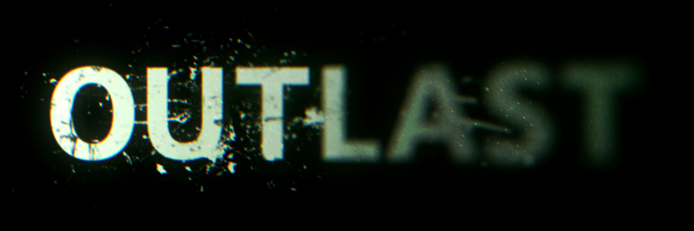

Sos un ambicioso periodista de investigación que está a punto de conocer el infierno en tierra. Siempre deseoso de ahondar en historias que ningún otro periodista se atrevería a investigar, buscarás un oscuro secreto en el corazón del manicomio del Monte Massive. Sobrevive tanto tiempo como puedas y regístralo todo. No sos un luchador, así que para moverte por los horrores del Monte Massive y revelar la verdad, tus únicas opciones serán correr, ocultarte o morir...
¿Te atreves a meterte dentro de este horror?
Historia